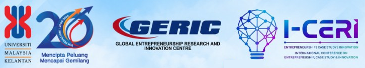
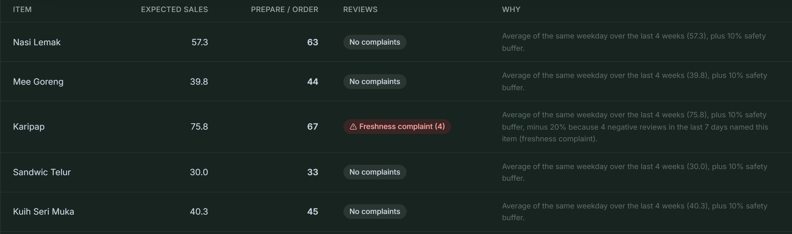

ISPARK 2026

INSIGHTAID AI
Multilingual customer insight and daily prep planning for cooperatives and small food businesses
Abstract
Cooperative cafés and small food outlets decide every morning how much to prepare, while customer feedback arrives in Bahasa Melayu, English and Mandarin and is read too late. INSIGHTAID AI is a web decision support system that combines sales history with multilingual reviews. It detects complaint spikes early, forecasts demand and turns both into explainable actions, including a new Prep & Stock Planner that recommends daily quantities and cuts items customers call “basi”. Our XLM-RoBERTa model reached 84.12% sentiment accuracy; in a replay on a synthetic cooperative dataset, forecast-based ordering cut simulated waste by 47.6%.

Objectives
Purpose: help small businesses and cooperatives make daily decisions from their own sales and multilingual customer feedback.
- O1. Multilingual sentiment analysis (BM, EN, 中文, code-mixed) with XLM-RoBERTa.
- O2. Sales forecasting with and without sentiment, tested against a sales-only baseline.
- O3. An integrated decision support system: crisis detection, explainable recommendations and prep & stock planning.
Sentiment accuracy by language
Waste: last week vs forecast ordering
Authors and Affiliations
Value Added
- One view of customer voice in BM, English, 中文 and mixed BM-English.
- Reviews reach the kitchen: a freshness complaint lowers tomorrow’s prep quantity, with the reason shown.
- Explainable by design: rules and evidence decide; AI only words the explanation.
- Affordable: runs on free-tier cloud and open-source models; anyone can try it with no sign-up.
Usefulness
Problem: food prepared by guesswork is wasted or sells out, and complaints in three languages surface too late.
Target users: cooperative (koperasi) cafés and mini marts first; also kedai runcit, kopitiam and early-stage online sellers.
How it is used: upload POS sales and reviews as CSV, open the planner each evening for tomorrow’s quantities, act on crisis alerts and evidence-backed recommendations, and track waste on the Before vs After card.
Proposed pricing: Free · RM 49/month · multi-outlet plan. No billing yet.
Impact
Recognition
Software: © 2026 Muhammad Danish Alif Bin Azrul. All rights reserved. No intellectual property registration yet.
Acknowledgement
Supervisor Ts. Ahmad Izuddin Bin Zainal Abidin, Universiti Teknologi PETRONAS. Public datasets: Shopee Malaysia reviews, Mesolitica Malay sentiment, ChineseNlpCorpus, Amazon Reviews 2023 and Olist. Koperasi Siswa Maju is fictional and its data is synthetic.